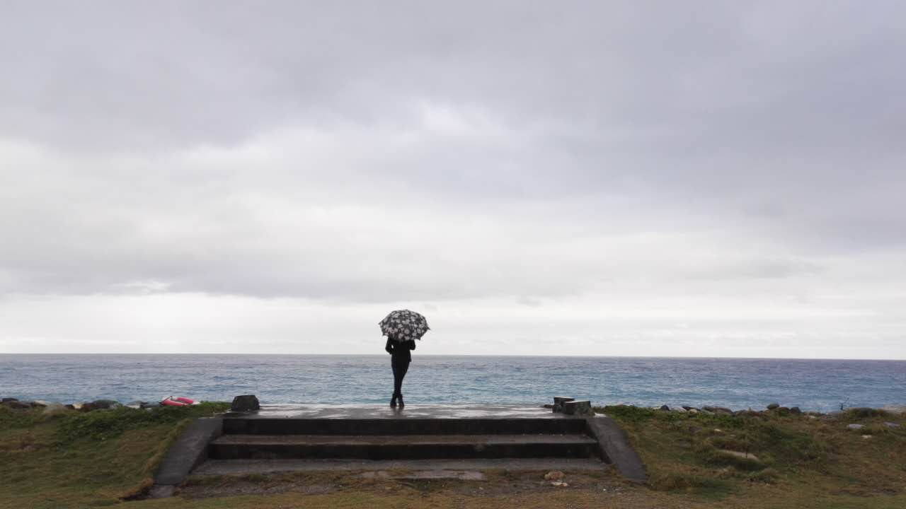

Love Letter From Monico
不知不觉，我们就又走过了520多个日夜，说了很多很多的话，走了很长很长的路。
这半年大部分时候过得很漫长、很煎熬，想必如果换作是以前的我，早就决定放弃了，可是因为Moni的陪伴，所有琐碎的日子都变得有意义，没有谁在我充满阴霾的日子里更让我感觉到希望了。
一直以来，我都习惯于把自己关在自己的小世界里，就像童话里孩子的壁橱，可能是因为害怕失败，也可能是因为面对世界诸多的选择太茫然无措，直到Moni出现。以前一直害怕自己不够强大，连自己都无法救赎，又怎么能够去给别人提供温暖，可是后来我才知道，当背后有着爱的人支持者你，尽管在别人看来，力量可能很微弱，但对于自己而言，你可能都不曾想过自己会这么坚定强大。
还记得这碗香锅吗？现在看来，这可能是我吃的最值的一碗香锅了。后来我们一起去操场上转圈，明亮的云霞和嬉戏打闹的孩子。说来奇怪，当时感到一种久违的心情舒畅，就像是重新回到了高中在足球场上躺着晒太阳的日子，那种感觉，来到北京之后就从未有过了。往后有无数个和Moni一起的日子，你就像阳光，或者山顶的风一样，无数次赠与我汇入心底的暖流。
可能台湾的两周真的就是我大学之中记忆最深刻的时光了，在台北像老夫老妻一样牵着手走过大街小巷，一起去夜市吃大家口口相传的美食，去博物馆看满目的珍宝。后来到了淡水，一座宁静地近乎理想的小城，等以后老了，希望也能找一个这样的地方，和Moni一起坐在海边看每一个日出日落。再之后，烟雨缭绕的九份和平溪线，骑着电动兜兜转转的花莲，暴风雨包裹的恒春，这些珍贵的记忆恐怕一辈子都会记得吧，有了这么多美好的记忆，又怎么舍得离开一起珍藏记忆的人。
跌跌宕宕，后来的一年里又发生了许许多多的事情，闹过小小的矛盾，又一次次满怀愧疚的和好，一起去吃了最想吃的美食，一起去看了所有想看的电影，一起去做饭，一起去锻炼，一起去逛街，永远都会有说不完的话，就算接下来的几十年里还是每天表白，我想说的恐怕都说不尽。这是在APM的哈哈镜里面的我们，我们一直都做这样的欢笑Couple吧！
我要你在我身旁，我要我为你梳妆。
这是送给你的我们的家，让我们把想说的话都藏在这儿，让我们把每一颗闪光的记忆都种在这一个小花园里，告诉你吧，解锁密码就是0803，永远爱你❤❤❤